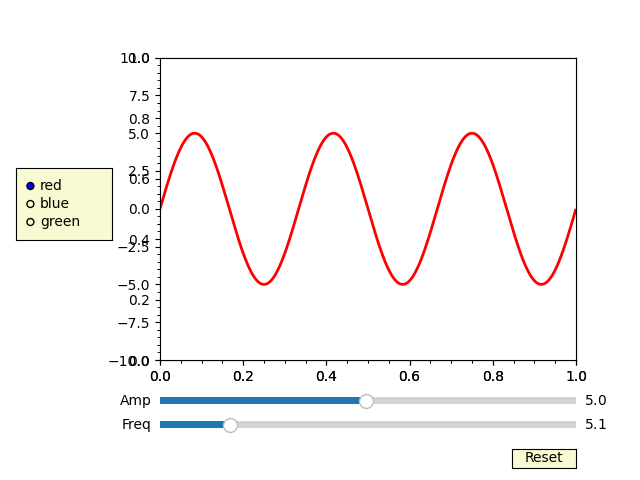

Note
Go to the end to download the full example code.
12.3.10.1.22. Slider#
import numpy as np
import matplotlib.pyplot as plt
from matplotlib.widgets import Slider, Button, RadioButtons
fig, ax = plt.subplots()
plt.subplots_adjust(left=0.25, bottom=0.25)
t = np.arange(0.0, 1.0, 0.001)
a0 = 5
f0 = 3
delta_f = 5.0
s = a0 * np.sin(2 * np.pi * f0 * t)
(l,) = plt.plot(t, s, lw=2, color="red")
plt.axis([0, 1, -10, 10])
axcolor = "lightgoldenrodyellow"
axfreq = plt.axes([0.25, 0.1, 0.65, 0.03], facecolor=axcolor)
axamp = plt.axes([0.25, 0.15, 0.65, 0.03], facecolor=axcolor)
sfreq = Slider(axfreq, "Freq", 0.1, 30.0, valinit=f0, valstep=delta_f)
samp = Slider(axamp, "Amp", 0.1, 10.0, valinit=a0)
def update(val):
amp = samp.val
freq = sfreq.val
l.set_ydata(amp * np.sin(2 * np.pi * freq * t))
fig.canvas.draw_idle()
sfreq.on_changed(update)
samp.on_changed(update)
resetax = plt.axes([0.8, 0.025, 0.1, 0.04])
button = Button(resetax, "Reset", color=axcolor, hovercolor="0.975")
def reset(event):
sfreq.reset()
samp.reset()
button.on_clicked(reset)
rax = plt.axes([0.025, 0.5, 0.15, 0.15], facecolor=axcolor)
radio = RadioButtons(rax, ("red", "blue", "green"), active=0)
def colorfunc(label):
l.set_color(label)
fig.canvas.draw_idle()
radio.on_clicked(colorfunc)
plt.show()
Total running time of the script: (0 minutes 0.195 seconds)